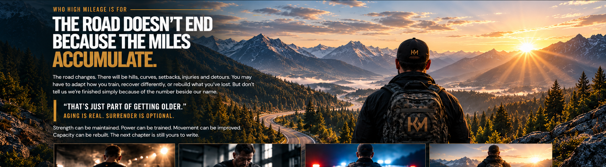
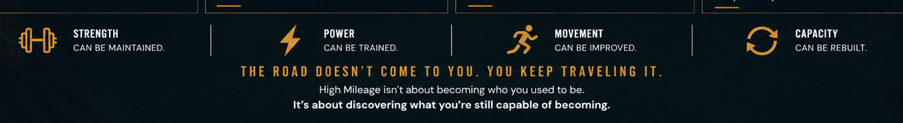

BUILD WHAT LASTS.
CAPABILITY
STRENGTH • PERFORMANCE • RECOVERY • FAITH
ONCE AN ATHLETE. ALWAYS AN ATHLETE.
For athletes, former competitors, first responders, and anyone who refuses to believe capability has an expiration date.

THE HIGH MILEAGE BELIEF
Your body is resilient—designed to move, compete, adapt and remain strong. The work may change as the miles add up. The opportunity to improve does not disappear.

CAPABILITY
READINESS
RESILIENCE
PURPOSE
FOUR PILLARS. ONE STANDARD. STAY CAPABLE.



WHY HIGH MILEAGE EXISTS
High Mileage was built from a lifetime spent competing, coaching, strength training and serving in a profession where physical and mental performance can matter without warning.
The mission became even more personal after a major Achilles injury: capability is worth fighting for, rebuilding is part of remaining an athlete, and the road forward still belongs to those willing to travel it.
READ THE FOUNDER STORY →THE FOUNDER STORY
High Mileage is not a theory about staying capable. It was shaped through competition, coaching, service, strength training and the experience of having to rebuild.
Soccer was the primary sport—leading to two Missouri All-State selections and collegiate competition. Athletics and competition have remained a constant throughout life.
More than 20 years coaching athletes from youth to semi-professional levels, alongside more than 25 years of strength training and broad experience across athletic development.
More than 22 years in law enforcement, including narcotics, task-force supervision, SWAT operations and leadership, patrol supervision, and 12+ years as a departmental fitness coordinator with FLETC certification.
A torn Achilles in 2026 created a new challenge: rebuilding athletic capacity. High Mileage is being built while that journey continues.
PERFORMANCE WITH PURPOSE
First responders are occupational athletes. A routine shift can become a sprint, pursuit, fight, rescue, carry or prolonged physical effort without warning.
That reality demands more than gym strength. It demands usable strength, power, movement, conditioning, durability and the ability to recover—so capability is available when the job calls for it.
THE HIGH MILEAGE PLATFORM
High Mileage is being built to do more than motivate. This is where the philosophy becomes useful—programming to follow, knowledge to apply, and a path forward when the road changes.
01 / BUILD CAPABILITY
Build strength. Develop power. Preserve the athlete.
02 / UNDERSTAND THE WORK
Understand the methods. Master the movements. Train with purpose.
03 / KEEP TRAVELING
Injuries happen. Setbacks happen. The road continues.
Training, education and comeback resources will continue to come online as High Mileage develops.
JOIN THE JOURNEY
Follow High Mileage as the platform launches and the conversation begins.
THE FOUNDATION
High Mileage is informed by 1 Corinthians 6:19–20 and 1 Peter 5:10. Faith is not separate from the journey—it helps give the journey direction.
“Take care of yourself so you can take care of others. Lead by example. Pull others with you.”